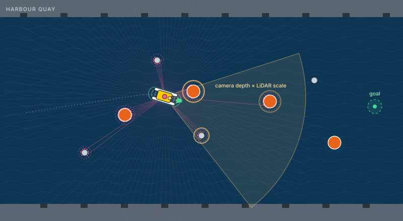
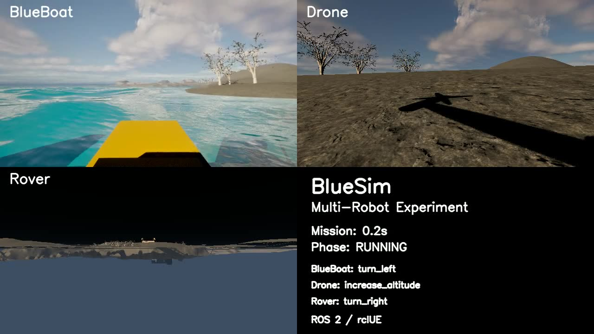
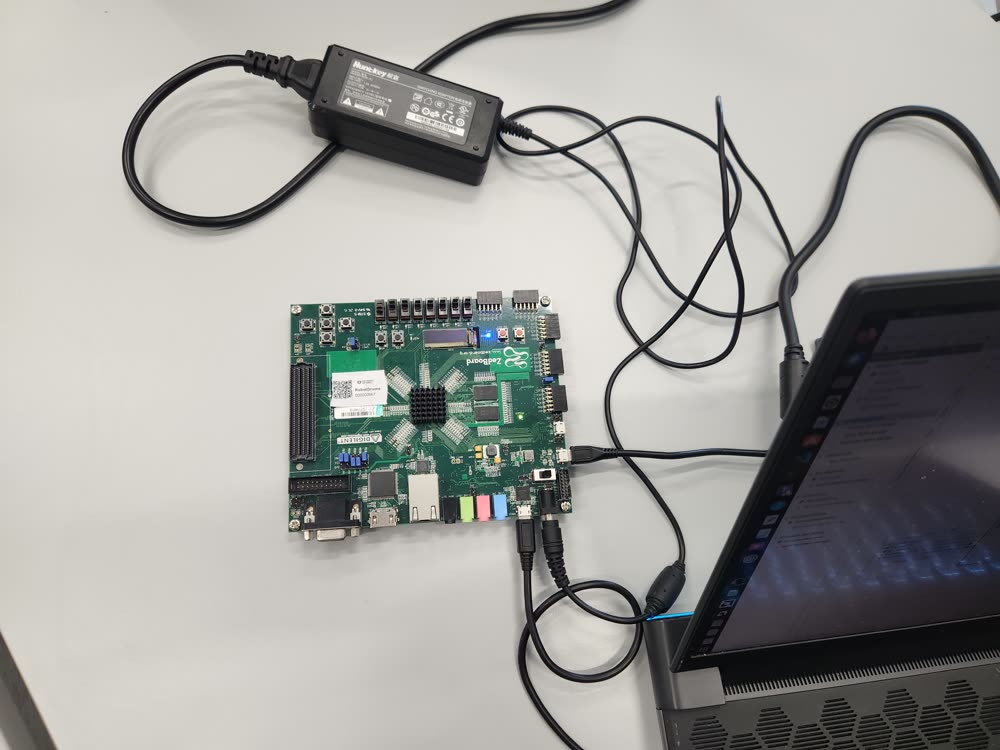
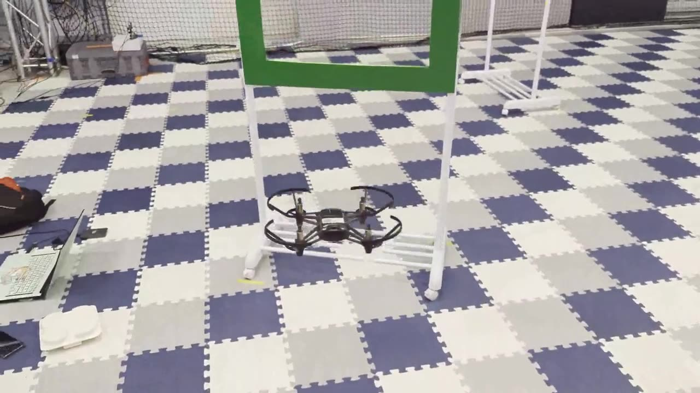
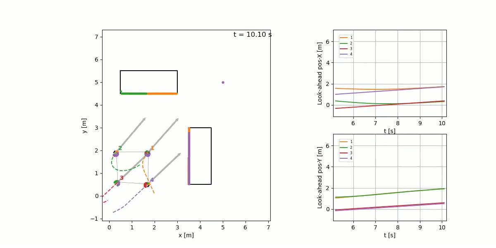

Mass-aware collision avoidance for small USVs in harbours
Camera + 2D LiDAR perception and a High-Order Control Barrier Function safety filter written in thrust and yaw moment, so mass, inertia and drag enter every constraint.
From a real boat on a Finnish lake to FPGA logic and drones: research, field work and course projects from my M.Sc. in Robotics & Autonomous Systems.

Camera + 2D LiDAR perception and a High-Order Control Barrier Function safety filter written in thrust and yaw moment, so mass, inertia and drag enter every constraint.

Two field campaigns on a real BlueBoat: Wi-Fi mesh and relay performance, and end-to-end ROS 2 latency between the boat and the base station.

A photorealistic simulator with a surface boat, a drone and a ground rover, all controlled over ROS 2 through rclUE. Open source.

A custom VHDL Sobel accelerator streamed over AXI DMA on a Zynq-7000, with target localisation on the ARM core: 3.1× faster than software.

A DJI Tello flies a 4-gate course on its own and lands at a stop sign, using a YOLOv8 detector, a 6-state machine and PID alignment in ROS 2.

Four robots hold a rigid formation as a "virtual sonar array" while a distributed QP-CBF filter avoids LiDAR-detected obstacles.